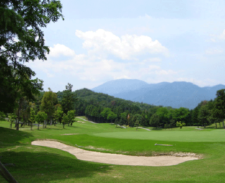

⑬アイランドゴルフガーデン上石津
(アイランドゴルフガーデンかみいしづ)
コースは見上げたり、見下ろしたり、左右は黒い森、フェアウェイは女性っぽく、挑発的にハザードが刺激します。荒っぽい稜線が融け合う掛軸の様な縦に長いパノラマは壮観です。
⑭藤原ゴルフクラブ
(ふじわらゴルフクラブ)
壮大なクラブハウスに代表される豪華さ、華麗さ。充実した時間を過ごしたいすべてのプレーヤーにお勧めです。
“水の魔術師”と称されるコース設計の名手・小林光昭氏が手がけた大型コース。
⑮関ヶ原カントリークラブ
(せきがはらカントリークラブ)

濃尾平野や養老山脈を一大パノラマを見るかのように望む丘陵コース。アウトは全体にフェアウェイ幅も広くとられ、OBも少ないので長打が楽しめます。
⑯養老カントリークラブ
(ようろうカントリークラブ)
連なる養老･鈴鹿山系に抱かれた自然林をそのまま生かした気品と風格の名門カントリークラブです。
設計者P．トムソンは、雄大な自然を取り入れコースレイアウトをしていますので、知性派・技能派プレーが楽しめるホールとなっています。
⑰メナードカントリークラブ
(メナードカントリークラブ)
オリジナリティあふれるメリハリのある造形。フラットながらも高い戦略性を求められるメナードカントリークラブ西濃コース。